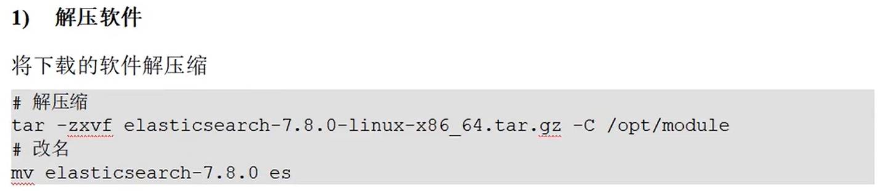

一、相关概念
1、单机&集群
单台Elasticsearch服务器提供服务，往往都有最大的负载能力，超过这个阈值，服务器性能就会大大降低甚至不可用，所以生产环境中，一般都是运行在指定服务器集群中。
除了负载能力，单点服务器也存在其它问题：
1》单台机器存储容量有限
2》单台服务器容易出现单点故障，无法实现高可用
3》单台服务器的并发处理能力有限
配置服务器集群时，集群中节点数量没有限制，大于等于2个节点就可以看做是集群了。一般出于高性能以及高可用性方面来考虑集群中节点的数量都是3个以上。
2、集群Cluster
一个集群就是由一个或者多个服务器节点组织在一起，共同持有整个数据，并一起提供索引和搜索功能。一个Elasticsearch集群有一个唯一的名字标识，这个名字默认就是“elasticsearch”。这个名字是重要的，因为一个节点只能通过指定某个集群的名字，来加入这个集群。
3、节点Node
集群中包含很多服务器，一个节点就是其中一个服务器（一般一台机器启动一个ES服务，故一个节点对应一个服务器）。作为集群的一部分，它存储数据，参与集群的索引和搜索功能。
一个节点也是由一个名字来标识的，默认情况下，这个名字是一个随机的漫威漫画角色的名字，这个名字会在启动的时候赋予节点。这个名字对于管理工作来说挺重要的，因为在这个管理过程中，要去确定网络中的哪些服务器对应于Elasticsearch集群中的哪些节点。
一个节点可以通过配置集群名称的方式来加入一个指定的集群。默认情况下，每个节点都会被安排加入到一个叫
做“elasticsearch”的集群中，这意味着，如果在你的网络中启动了若干个节点，并假定它们能够互相发现彼此，它们会自动的形成并且加入到一个叫做“elasticsearch”的集群中。
二、Windows集群
部署集群
就是将ES压缩包分别解压到三个不同的文件夹。分别修改配置文件，并启动服务，使其成为集群。
修改配置文件（/config/elasticsearch.yml）
注意：配置文件参数“:”后面一定要加空格。
#集群名称
cluster.name: myCluster
#节点名称
node.name: node1
#主节点
node.master: true
#数据节点
node.data: true
#ip名称
network.host: localhost
#http端口
http.port: 1001
#tcp监听端口
transport.tcp.port: 9301
#跨域配置
http.cors.enabled: true
http.cors.allow-origin: "*"
查看集群状态
GET请求：http://localhost:1001/_cluster/health
后加入的节点需要配置查找模块
#集群名称
cluster.name: myCluster
#节点名称
node.name: node1
#主节点
node.master: true
#数据节点
node.data: true
#ip名称
network.host: localhost
#http端口
http.port: 1002
#tcp监听端口
transport.tcp.port: 9302
#查找模块
discovery.seed_hosts: ["localhost:9301"]
discovery.zen.fd.ping_timeout: 1m
discovery.zen.fd.ping_retries: 5
#跨域配置
http.cors.enabled: true
http.cors.allow-origin: "*"
三、linux集群
3、1 linux单点


cluster.name: elasticsearch
node.name: node-1
network.host: 0.0.0.0
http.port: 9200
cluster.initial_master_nodes: ["node-1"]

es soft nofile 65536
es hard nofile 65536


（再次执行上面的更改ES文件所有者操作：chown -R es:es /opt/module/es）
3、2 linux集群


Elasticsearch集群：
1、集群宕机只剩一个节点（不管剩下的是不是master节点），不会一直选取（master），集群也不能访问。